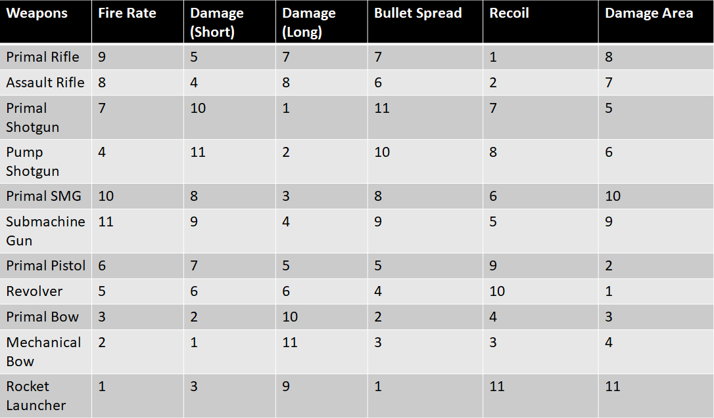
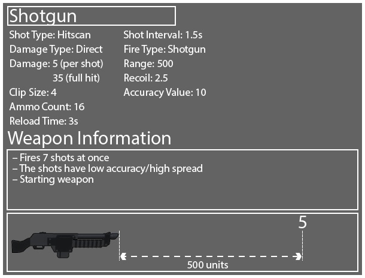
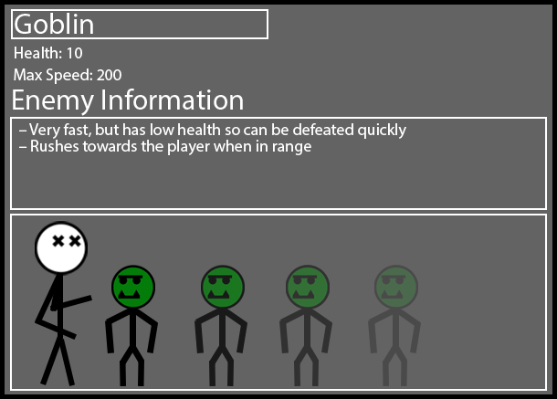
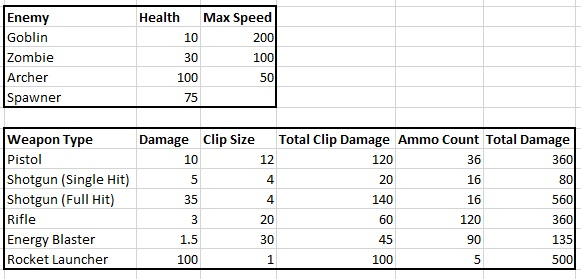

Ammo Crisis is an over-the-shoulder third-person shooter Unreal Engine 4 framework made by the lecturers at Staffordshire University, and is used as part of the Games Design module. In the game, the player has to get to the end of the level while avoiding being hit by enemies, as even one hit results in a game over, as well as conserving their ammo to make sure they can still fight off enemies. Using the preset functionality in the framework, I had to design and implement balanced weapons and enemy stats, as well as create a full and fun playable level.
The design documentation below is a formatted, revised version of the work I submitted as part of the module.
Skills: Level Design, Gameplay Design | Engine: Unreal Engine 4
After familiarising myself with how Ammo Crisis played, I got to work creating some ideas on how I wanted the level to play, particularly focusing on the weapons. After giving it some thought, I felt like the best area to start was to work on creating some weapons, and then enemies to use them on. Once that is done, I’ll start work designing the level, and then go back and fine tune the balancing of the stats when needed.
WEAPON DESIGN
Quick Point Tables
To come up with ideas for what my weapons would be and how they should function compared to each other, I looked at 3 different games and made Quick Point tables, analysing how the different weapon types are balanced compared to each other. The first is Peril, a project developed by lecturers and used by the university on course modules. The other two I chose were Fortnite and Splatoon 2. For all the quick point tables, 1 is the least/worst, and the highest value is the most/best.
Peril Quick Point Table
When quick pointing the weapons in Fortnite, I only focused on the weapons currently available in the main game at the time (Chapter 2, Season 6), and ignored weapons that were very similar or being inferior versions of another weapon (like the Revolver and Makeshift Revolver).
Fortnite Quick Point Table
For Splatoon 2, I chose to quick point the weapon types (as the game has well over 100 weapons).
Splatoon 2 Quick Point Table
Weapon Creation
The first thing I did to decide on the different weapons I was going to use in the level. Once I had 5 of them nailed down, I quick pointed out how the stats were going to differ between them.
Weapon Quick Point Table
To get a stronger sense of what the weapons were going to be like, I created basic weapon diagrams, going into more detail for the individual weapons by assigning preliminary values to the weapon statistics.
Weapon Diagrams
Next, I chose to create the stats for the different enemies, and then balance the weapons with them.
ENEMY DESIGN
The Ammo Crisis framework had preset enemies, but the Health and Max Speed stats were editable on each one. Because enemies in the framework only have two controllable attributes, the quick point table I came up with for them was very simplistic. Another enemy, DoomCrab is also present in the framework's enemy list, but cannot be placed into the level so is ignored for the quick point table.
Enemy Quick Point Table
I want to have the enemy stats be designed in such a way that incentivises using the different weapons in the level. My idea for the enemies was to have the goblins be weak but fast, making them harder to hit with the slower and less accurate weapons; the zombies are to be the 'middle' unit, having average health and speed; the archers are the slow, tanky units that have a lot of health, translating into them being harder to take down but also more vulnerable to the slower, stronger weapons.
Enemy Diagrams


WEAPON AND ENEMY BALANCING
I took this data, creating stats for the enemy types and converting it into an Excel spreadsheet, which I then used to begin balancing the weapons and enemy stats. To start this, I charted the total damage output of each weapon over a clip and full ammo count, then compared how many of each of the enemies would be defeated by each. While this does abstract out some gameplay elements like the agility of each enemy type, it provides a good insight into balancing before proper testing in the level can begin.
Total Damage Dealt Tables
Using this data, I can start to figure out which weapons perform the worst compared to the others, and make sure that the amount of enemies defeated lines up with the projected strengths of the weapons based on the original quick point tables. The obvious worst weapon is the shot gun used at range, as I deliberately set it up to have a short, inaccurate shot forcing the player to get closer if they want to use it. The rest of the values fall in line with how I'm envisioning each weapon being used; one weapon I'm going to pay closer attention to is the energy blaster. It is currently listed as being the weakest of all the weapons when just taking into account the damage, but I want to have a fast firing rate to compensate (which can't be easily shown by my current charts). To help give me a better picture, I created another chart that showed the fire rate and damage over a length of time.
Weapon Fire Rate Tables
After looking at this table as well, I found that the energy blaster seemed to be weaker than the other guns, with it not being able to put out as much damage compared to the other weapons. Thus, I decided to buff it slightly, by increasing the damage output to 2, however this led to the damage output being the same as the rifle. This is something I wanted to avoid as it pretty much turned the energy blaster into a faster rifle, and with only 5 weapons in the level I wanted to make sure each one felt unique. So, I had to come up with another way to balance the weapon. I decided for the sake of having more varied weapons that I was going to deviate from my original plan and quick point table slightly; I gave the energy blaster more ammo than the rifle, and moved damage to 1.75. I believe this is still balanced as the tables I have made don’t reflect other attributes like range, which the energy blaster is more proficient in; because the change is a deviation from my original quick point tables, I want to particularly focus on it in testing.
Weapon Balance Graphs
To further visualise weapon damage output, I decided to make a graph to show damage output over time in more detail, instead of just 5 seconds and the full clip. After setting up teh calculates (to account for clip running out), I realised that some of the weapons would have another clip loaded and be able to do more damage before the 10 seconds had elapsed, so changed the Excel formula to account for it.
Weapon Damage Over Time
I also charted how many enemies would be defeated by each of the weapons.
Enemies Defeated Chart
GAMEPLAY DESIGN
Basic Game Loop Diagram
Mechanics Diagrams
Reload
Door Opening
Weapon Pickup
Weapon Switching
UI Wireframes
Base Screenshot
Screenshot + Wireframe Overlay
Wireframe Iteration 1
Wireframe Iteration 2
LEVEL DESIGN
Because Ammo Crisis' core gameplay loop is focused on survival and being hit by the enemy a single time results in a game over, I wanted to foucs on creating areas that give the player different movement options, as well as areas of cover to hide from fire (especially in rooms with the ranged Archer enemies). I also want to make sure that the enemy placement results in an evenly-spread rising difficulty as the player progresses through the level. To achieve this, concurrent to the other elements of my plan I kept track of the total health in each area of the level, and charted it in Excel.
After brainstorming some ideas that I wanted to put into the level, I went about creating a bubble map plan to work from. Because the assignment is to design a single level (with no reference to where in a game it would take place), I decided to properly introduce the player to the mechanics and enemies in isolation, giving them time to understand their behaviour before being thrown into a big fight with them, in case it is their first time playing.
BUBBLE MAPS
Iteration 1
Iteration 2
Final Iteration
With the bubble maps, I highlight general weapon locations, but this may change as I work on and balance the level. I also made a beats and pacing diagram to show the difficulty/intensity that I want to hit with the level (with the level being broken down into the same sections as the final bubble map iteration). For the level structure, I aim to loosely follow the 3-act structure, as it builds up the difficulty and intensity effectively but also gives the player room to breathe.
Beats and Pacing Diagrams
Beats Map
Beats Map and Pacing Diagram
Level Pacing Curve
Level Pixel Map
As I was designing my level, the only part I was unsure of was the scaling. I had done some testing in the framework, but didn't yet have a proper gauge on how big each section should be. In the base pixel map, each pixel represents a 250x250 unit square in the level.
Basic Map
Full Level Map
After creating the map, I found that the graph of enemies per room was somewhat unbalanced. I intend for the later rooms to take longer (so having more health is justified), and combined with the introduction of the rocket launcher for the final room I think the balance should work out fine; however it is something I'm going to play close attention to when I'm testing the built level.
Enemy Health Balance Graph
I also made a 3D version of the pixel map using MagicaVoxel.
MagicaVoxel 3D Voxel Map
Bubble Map Overlay
As I was working on the level, I ran into an issue with the rocket launcher only firing once, and then locking the player to the weapon after recharging, unable to fire, swap or even open doors to progress further into the level. Luckily, the issue was simple to fix as all I needed to do was increase the Reload Shot weapon stat to be more than 0.
LEVEL PLAYTHROUGH VIDEO
LEVEL ANALYSIS
The most glaring issue from the gameplay footage is the enemy spawners in the final room causing way too many enemies to be spawned. My plan to stop this from happening in the next level iteration is to increase the time taken for enemies to spawn, and decrease the amount of goblins that are spawning.
Another issue with the level design is the scaling of the level. Much like with the Peril design task from Semester 1, I made some of the areas way too big; this issue is exaggerated with the relatively slow character movement in Ammo Crisis. I plan to scale down some of the areas and rebuild parts of the level, particularly cutting down on the long corridors that pad out how long the level takes.
After the playthrough, I also have issues with the difficulty scaling in the level; the earlier areas feel like they are too easy, and then the difficulty ramps up massively by the end of the level. In it's current state, the pacing is a far cry from the beats and pacing map I had created earlier, so this is something that I want to rectify. I feel like adding some more larger fighting areas with different, more varied design in the rooms will help increase the action in the level as well as the fun the player will have in the level. Finally, I want to take out some of the ammo options, as after some playtesting it felt very unnecessary to give the player so much ammo (apart from the one at the end of the level).
LEVEL DESIGN ITERATION 2
To improve and refine my level, I want to have a second iteration of the design, to hopefully fix the issues I had with the level I had already created. The first thing I did was lay out the changes by tweaking my bubble maps. I wanted to keep the first section the same, having the player being introduced to the goblins and spawners, but I also want to introduce the zombie enemies at this stage too so that the pacing doesn't have to be slowed down later in the level when introducing the enemies in isolation. I also replaced the current zombie introduction with the archers; by using the enemies sooner in the level, it gives me more areas to experiment with enemy patterns later in the level.
BUBBLE MAPS
Iteration 1
Iteration 2
Final Iteration
For the pacing and intensity of the level, I want to keep most of it the same, by trying to stick to the 3-act structure, especially given the first iteration of the level had somewhat missed the mark on achieveing it. This ended up being altered from how Iteration 1's was presented, with the start and middle sections increasing in size to accommodate the design changes.
Beats and Pacing Diagrams
Beats Map
Beats Map and Pacing Diagram
Level Pacing Curve
I then reflected these changes on the map of the level.
New Level Map
Referring back to the total health chart, it now showed a much more balanced map, especially taking into account the length of different sections. I decided to keep the lull in health before the final room, as it helped to make the large final section feel more climactic and it gives the player a break from the constant rising intensity.
Total Enemy Health Chart
Changes From Map Design
When building the level, I chose to make the change of decreasing the size of the first spawner room by making it thinner. This helps push the player into their first encounter with the spawner, making them learn the functionality instead of them just attempting to go around it. I also added a handful of goblins to the corridor section, making it slightly harder to get through, as well as shortened the rest area before the final room. The final room was changed by converting the archer spawner into a goblin one, as if the player takes a long time to get through the level they would be faced with a near-impenetrable wall of strong enemies.
Final Level Overview
FINAL BALANCING
Once I started to play the level, the difficulty immediately felt much more balanced than the first iteration, showing that the changes I had made were effective at improving the level, and made the decision to only make some balancing tweaks and not another full level iteration. However, I found that my decision to remove some of the ammo meant I was running out once more group enemy encounters were introduced into the level. Because I felt like re-adding the ammo options would make the level too easy and work against the improvements I had made over the first iteration, I decided to instead rebalance the weapon ammo counts.
Going back to my balance charts, I found that the energy blaster was outputting the least amount of damage over its clip, so I added more ammo to it.
The other balancing change I made was decreasing the archers' health. While I still want them to be bulkier, most of the weapons take around 10 seconds of continuous fire to kill them, so I felt this value needed scaling back slightly to avoid the player seeing them as bullet sponges and have them find the level tedious to get through.
After some playtesting, I once again decreased the spawners in the final room, as they were still causing a very large amount of enemies to be spawned. Now, a goblin is spawned every 10 seconds and a zombie every 15. This change not only stops a huge horde of enemies from confronting the player as they enter the final room, but also lets the player kill the enemies that are there before new ones spawn.
Revised Total Weapon Damage Graphs
FINAL LEVEL GAMEPLAY VIDEO
FINAL ANALYSIS
With the second iteration and final balancing tweaks, I feel like I've very much elevated the quality of the level and made it much more balanced and fun to play. While there are still some issues, these are mostly just caused by quirks in the framework, such as enemies detecting the player through walls, them being right outside a door when it is opened, and spawners spawning enemies on top of the player. The balancing changes I made also make the level line up with my original beats and pacing maps, as well as having the weapons and enemies mostly line up with my original ideas and be balanced against each other. Because of this, I feel like any extra changes I would make to the level would just be unnecessary and potentially work at a detriment to the level itself instead of improving it further.